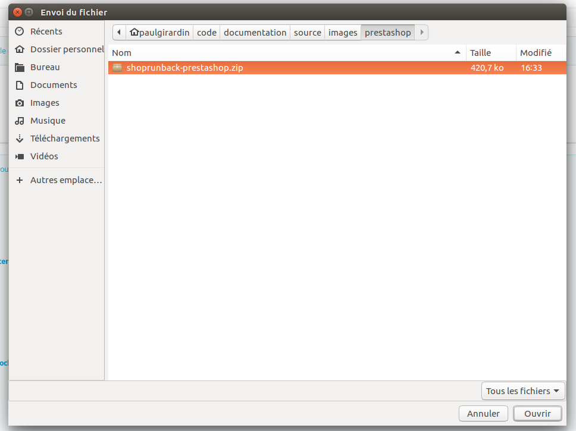
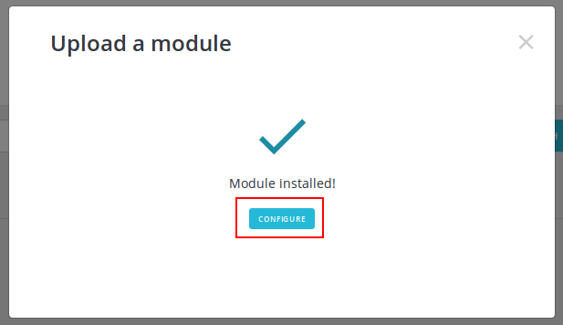
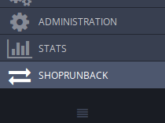
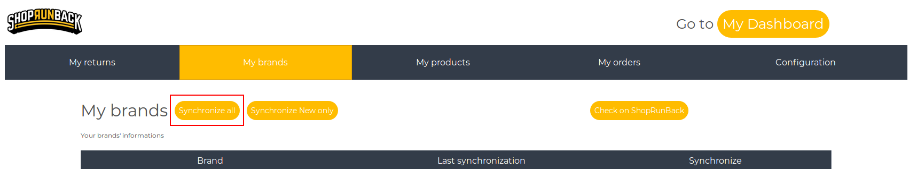
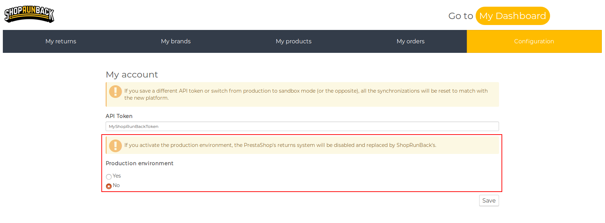
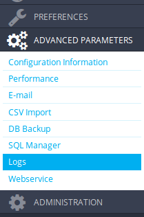
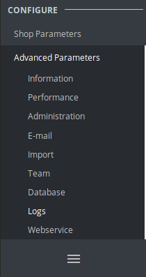
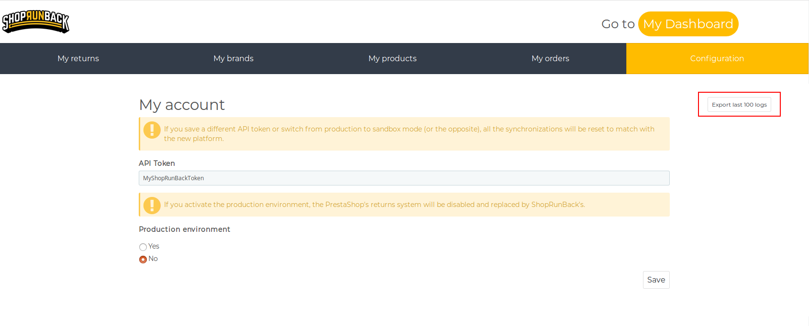

Go back to the main documentation
ShopRunBack’s Prestashop Module
Welcome on the documentation for the ShopRunBack module for Prestashop.
This module will help you to manage your returns with ShopRunBack while staying on your own site.
If you have any question, please send an email to: tech_at_shoprunback.com
Supported versions
The module is compatible with all versions starting from 1.6.0.9.
If your version is below, please update your Prestashop before.
Install the module
Create your own ShopRunBack account
First of all, you must create your own ShopRunBack account here.
Download the module
Click here to download the module.
Install on your site
1.6 version
Go to the back-office of your website, then go to Modules.

Click on Add a new module.

Click on Choose a file.

Select the .zip you just downloaded.

Click on Upload this module.

Find the ShopRunBack module and click on Install.

1.7 version
Go to the back-office of your website, then go to Modules.

Click on Upload a module.

Select the .zip you just downloaded.
The module is now installed. You can now click on Configure to directly go to the module configuration page.

Troubleshooting installation
Prestashop does caching for modules and sometimes the new version is not taken in consideration and Prestashop will keep using the old version of the module.
To avoid this, before you upload the zip, make sure you have removed the current version of the module and disable cache and select Recompile templates if the files have been updated in the Performance section of the Advanced parameters

Configure the module
Connect my ShopRunBack account to the module
To share your data with ShopRunBack, you must use the authentication token of your ShopRunBack account.
Copy it and go back to your website.
Click on the ShopRunBack tab in the left menu.
| 1.6 | 1.7 |
|---|---|
|  |  |
Go to Configuration.

Paste your token in the API Token field and save your configuration.

Now, you can share your data with your ShopRunBack account!
Synchronize your data!
After configuring your account, we recommend you to directly synchronize all your brands, products and orders.



Environment
There are 2 modes:
- Sandbox: It is a test environment. The data on this environment is reset every monday.
- Production: It is where your customers’ return requests are made. This is real data!

Use the module
Synchronize your data
The ShopRunBack tab summarizes your returns, products, brands and orders, and allows you to synchronize them with ShopRunBack.
On each tab, you can see your data and can synchronize each of them at any time, or all at once.
You must always have your data synchronized with ShopRunBack to avoid any discrepancies.
What is automatically synchronized?
For instance, some of your data is automatically synchronized after some actions:
- Product
- When you create a product
- When you edit a product
- When you delete a product
- Order
- When you or a customer create a product
- When the status of an order changes
- Return
- When a return is modified on ShopRunBack
Which language can I use?
It is currently available in English (GB and US) and French.
How do my customers create a return request?
Any customer can create a return request once an order is at least Shipped.
They then have a button to create a return request on the details of the order.
(The screenshots show the default PrestaShop template)
1.6 version

1.7 version

This button redirects them to the ShopRunBack’s form to fill their request.
I have a problem
Check what went wrong
We log most of the module’s actions on your log system.
To access it, just go to your back-office, and, in the left menu, go to Advanced parameters > Logs.
| 1.6 | 1.7 |
|---|---|
|  |  |
All our logs have their message beginning with [ShopRunBack] so you can filter them easily.
Contact the developers
If you meet a problem you cannot solve, please export the last logs on the configuration tab and send a mail to tech_at_shoprunback.com
